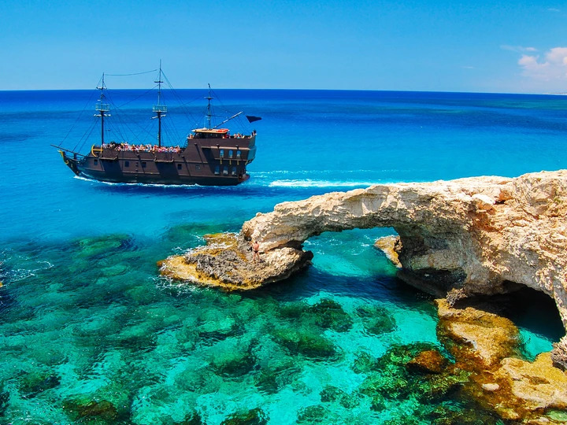

Cypr
Cypr kojarzy mi się z wakacjami i totalnym luzem. Plaże są piękne, woda czysta i ciepła. Miasteczka mają swój urok, dużo tam historii i starych budynków. Jedzenie śródziemnomorskie, bardzo świeże i aromatyczne. Wiele rzeczy można zobaczyć i jednocześnie odpocząć.
